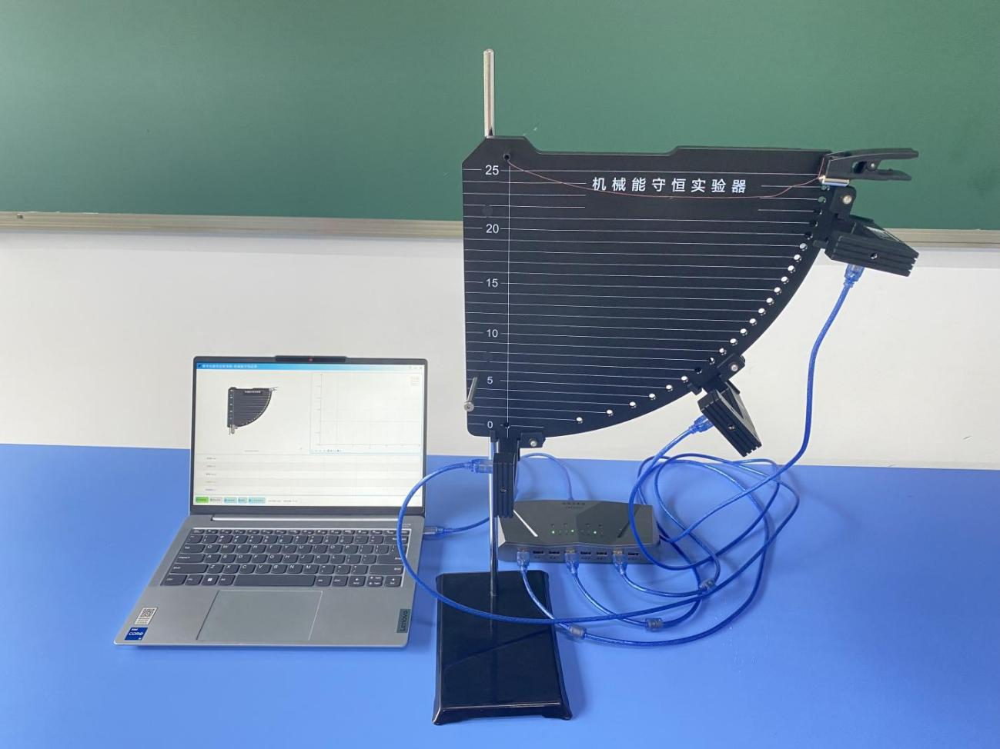
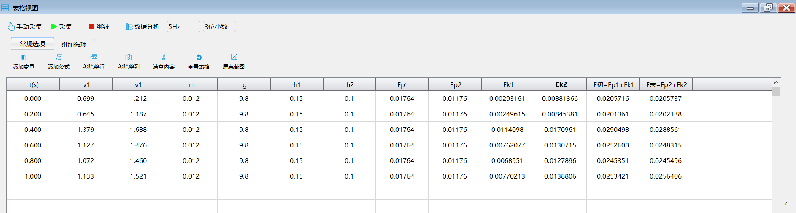

实验二十一 验证机械能守恒定律
【实验目的】
用自由落体法验证机械能守恒定律，加深对机械能守恒定律的理解。
【实验原理】
物体做自由落体运动时只受到重力的作用，满足机械能守恒定律的条件。实验中采用两个光电门测量物体在两个不同高度时的速度，求出对应的初动能Ek1和末动能Ek2。而通过测量出两个光电门之间的高度差h则可计算出在两个光电门之间运动时重力势能的变化ΔEp ，若有ΔEp＝Ek2－Ek1，即动能的增量等于重力势能的减少，便可验证机械能守恒定律。
【实验器材】
数据采集器、3个光电门传感器、机械能守恒实验器、重物、连接套件和计算机等。
【实验装置】

【实验操作步骤】
1.搭建好实验环境，将两个光电门传感器分别固定在铁架台上，调整光电门之间的距离为0.4m；
2.打开实验数据分析软件，连接好数据采集器和光电门传感器；
3.打开表格视图，点击“添加变量”，添加重物质量“m”，重力加速度“g”，高度“h1”和“h2”；点击“添加公式”，添加重力势能Ep1和Ep2、动能Ek1和Ek2，点击“添加公式”，添加“Ep1+Ek1”和“Ep2+Ek2”；
4.将重物从两个光电门上方自由释放，软件自动记录并计算表格中各项值；
5.比较“Ep1+Ek1”和“Ep2+Ek2”的值，并做出他们的关系曲线进行分析；
6.改变两个光电门之间的距离，重复上述实验步骤；
7.改变重物的质量，重复上述实验步骤。

【思考与讨论】
1.分析本实验中误差产生的原因，并从误差的角度比较本实验与上一实验验证机械能守恒定律的优劣；
【自由探究】
重锤下落过程中受到的铁丝的摩擦力以及空气阻力都非常小，可以忽略，认为重锤是在做自由落体运动。自由落体运动是一种初速度为零，加速度等于g（重力加速度）的匀加速直线运动，运用匀加速直线运动的规律，我们也可以通过理论分析得出重锤下落过程中其机械能守恒的结论。根据你所学过的知识，动手试一试。